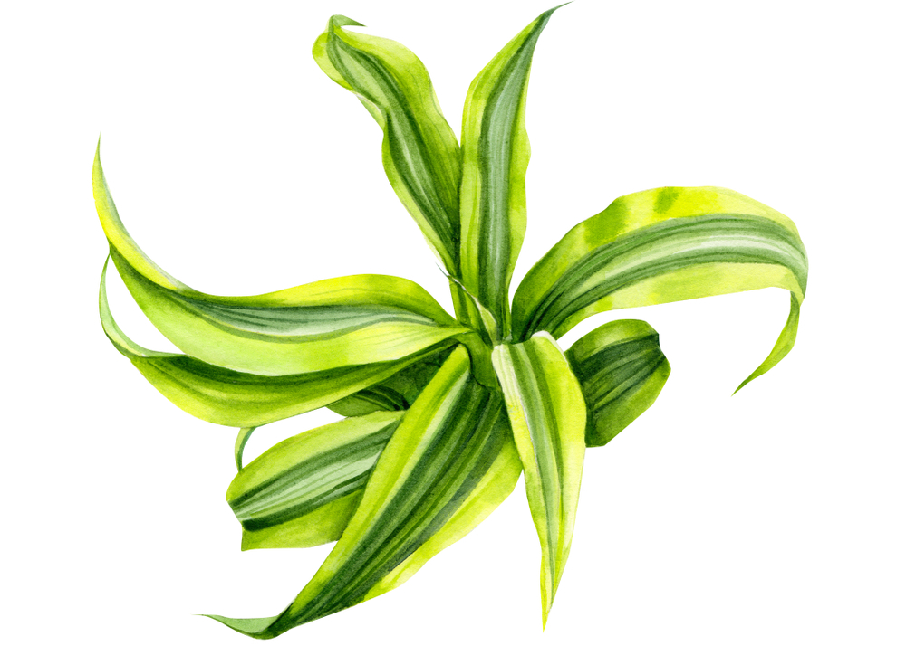
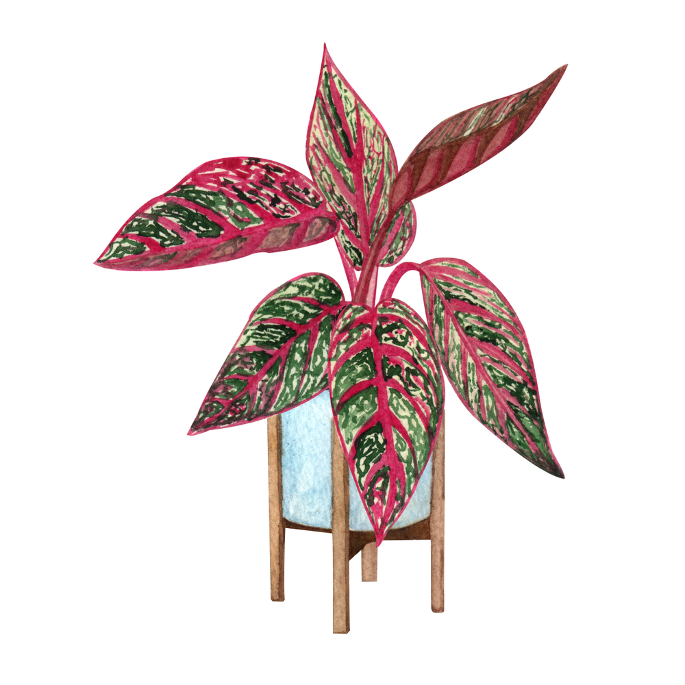

Helechos

Esta fue una planta muy utilizada en viviendas entre los años 1970 y 1990,
y ha vuelto como una tendencia importante en los interiores
contemporáneos. Necesita tierra húmeda, no debe exponerse al sol y debe evitar vientos fuertes. Le
gusta recibir algo de luz natural. Entre las especies más comunes,
destacamos la Nephrolepis exaltata.
- Nombre Científico: Nephrolepis exaltata
- Nombres Populares: Helecho común, Helecho doméstico
- Familia: Davalliaceae
- Clima: Ecuatorial, Subtropical, Tropical
- Origen: África, América Central, América del Norte, América del Sur, Asia, Indonesia
- Altura: 40 a 60 centímetros
Dracaena fragrans

No necesita mantención constante. Se considera no contaminante
ya que algunos estudios de la NASA indican que contribuye a
la eliminación del formaldehído, el xileno y el tolueno del aire.
- Nombre Científico: Dracaena fragrans
- Clima: Ecuatorial, Mediterráneo, Oceánico, Subtropical, Temperado, Tropical
- Altura: 60 a 90 centímetros, 90 centímetros a 1.2 metros, 1.2 a 1.8 metros, 1.8 a 2.4 metros,
2.4 a 3.0 metros, 3.0 a 3.6 metros, 3.6 a 4.7 metros, 4.7 a 6.0 metros, 6.0 a 9.0 metros
- Luminosidad: Luz Difusa, Media Sombra, Sol Pleno
Zamioculca

Es una de las plantas más flexibles y se adapta bien a muchos tipos de
lugares, incluso a aquellos que reciben poca luz y poca ventilación. Solo se recomienda prestar
atención
a las regiones muy frías, ya que no tolera temperaturas inferiores a 18º.
- Nombre Científico: Zamioculcas zamiifolia
- Nombres Populares: Zamioculcas, Zamioculca
- Clima: Ecuatorial, Mediterráneo, Subtropical, Tropical
- Origen: África
- Luminosidad: Luz Difusa, Media Sombra
Rhapis excelsa

De tamaño medio, esta especie es bastante común en espacios interiores
corporativos o áreas de uso colectivo, como salas de edificios residenciales,
por ejemplo. No necesita mucha agua y crece bien a la sombra o media sombra.
- Nombre científico: Rhapis excelsa
- Nombres Populares: Palmerita China, Palma Bambú, Broadleaf Lady Palm
- Familia: Arecaceae
- Origen: Asia, China